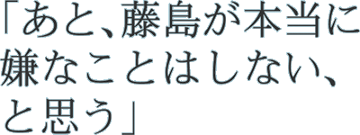
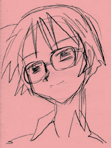

彼女は平凡な人間だと思う。
美人だという。学校にあまり真面目に通わないという。救急用品をいつも持ち歩いている、という。果ては、付き合っていた男を自殺させたことがあるという。
こうして並べてゆくと、彼女が生きている世界の、あまりの小ささに、ため息が漏れる。
だから坂上冬子は、鍵を集める。
鍵を手に入れるたびに、自分のための扉が増えるような気がして。 |

|
いったいなぜこの世に、平凡な人間がいるのか。
いわゆる「語るも涙、聞くも涙の物語」のような人生が、あまりにも平凡に聞こえるのはなぜか。
精神病患者の語る妄想がどれもみな、判で押したように同じ印象を与えるのはなぜか。
以下、G. K. チェスタトン『棒大なる針小』（1975）から引用する。「美徳とは悪徳がないこと、あるいは、道徳的な危険を避けることではない。美徳は、痛みや何かの香りと同じく、生き生きとしたもので、独自に存在できる。憐れみとは、残酷でないこと、あるいはひとに恨みや罰を加えないことを意味するのではない。実際にまともに見たことがあるかないかはともかく、太陽のように明々白々なものを意味する」。
チェスタトンのこのリストは、かなり長く続く。だが欠けている項目もある。私はこのリストに、「自由」という項目を付け加えたい。自由は、制約がないことではなく、光り輝く肯定的なものだ。
|